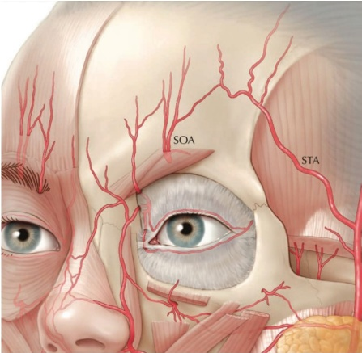
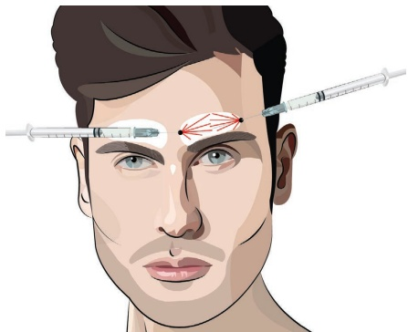
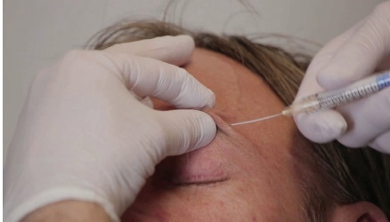
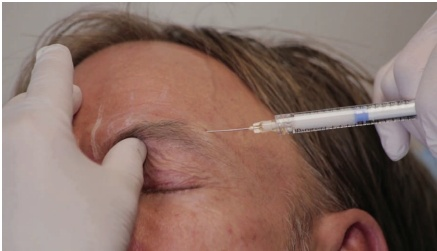
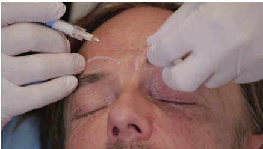
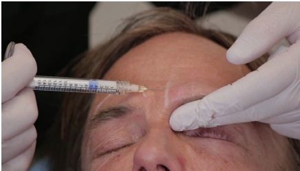
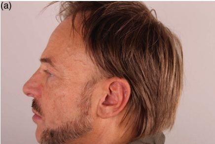
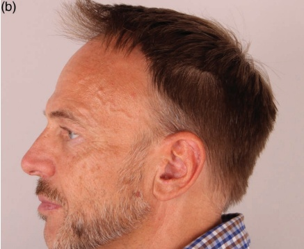

8 面部上三分之一：男性前额隆起
男性额部骨隆（Frontal Bossing）
JANI VAN LOGHEM
额骨隆起通常是男性面部特征，增强该区域可使患者呈现更具男性化的外观。与女性相比，男性的额骨在眶缘附近具有更突出的嵴。因此，置入羟基磷灰石钙（CaHA）的理想深度是在骨膜水平。此处将阐述真皮下套管针技术。该区域的主要危险区是自眶上孔/缺口向上走行的神传血管束。由于眶上动脉位于紧密组织内，靠近骨膜，应避免可能发生的血管内事件。为尽量降低风险，切勿强行将套管针穿过此区域的任何阻力点。另见图 8.1，以了解治疗额骨隆起时动脉的危险区域。
8.1 男性额骨隆（套管针技术）
注射定位参考图 8.2。
8.1.1 分步技术
- 标记区域并消毒。可考虑对入点、额沟和眶上神经进行麻醉阻滞。


-
使用 23G 锐针为 25G 套管针建立入点（更佳的是使用 22G 套管针，可进一步减少血管并发症）（图 8.3）。
-
使用全粘度（未稀释）的 CaHA 或最大标准稀释度的 CaHA（1.5 mL 注射器中含有 0.3 mL 利多卡因）。
-
拉伸皮肤使套管针穿过真皮，以通过阻力；可考虑用拇指和食指在注射器之间滚动。
-
抬起套管针前方的组织，使其到达骨膜的阻力最小路径。
-
在不施加任何力量的情况下，轻轻将套管针推进至骨膜上方。注射时，使用非惯用手的指节按压眶上缺口。
-
在骨膜上放置多个向后行（retrograde）的线性线，每条向后行不超过 0.05 mL（图 8.4）。切勿强行将套管针穿过阻力，因为眶上孔周围含有神传血管束。
-
向轨道缘和眉毛外侧尖端方向，缓慢地注射总计 0.1 mL 的向后行线性线。
-
从内侧入点开始，在距轨道缘上方约 2–3 cm 处（图 8.5 和 8.6），水平推进套管针至骨膜。用非惯用手的手指按压轨道缘以施加压力。




- 将钝性套管针沿骨膜推进，每根线状填充物回行注射约 0.025 mL，以保持在不超过 0.04 mL 的最大限制内 [1]。
- 根据需要均匀推开。


有关术前和术后效果以及应用技术，请参阅图 8.7。
8.2 术后护理
如有必要，可手动按摩该区域以使产品均匀分布。注射后可能会出现水肿，通常持续一天。由于水肿接近眶上孔，肿胀可能向下蔓延至眼睑。发生这种情况时，肿胀通常会持续几天。
8.3 实现最佳效果的附加治疗
为进一步改善男性额部区域的美学效果，可使用肉毒毒素注射于额肌，以降低眉毛并放松表情肌。可以考虑在邻近区域（太阳穴、额凹）使用填充剂。
参考文献
[1] T. T. Khan et al., “An anatomical analysis of the supratrochlear artery: Considerations in facial filler injections and preventing vision loss,” Aesthet Surg J, vol. 37, no. 2, pp. 203–208, 2017.